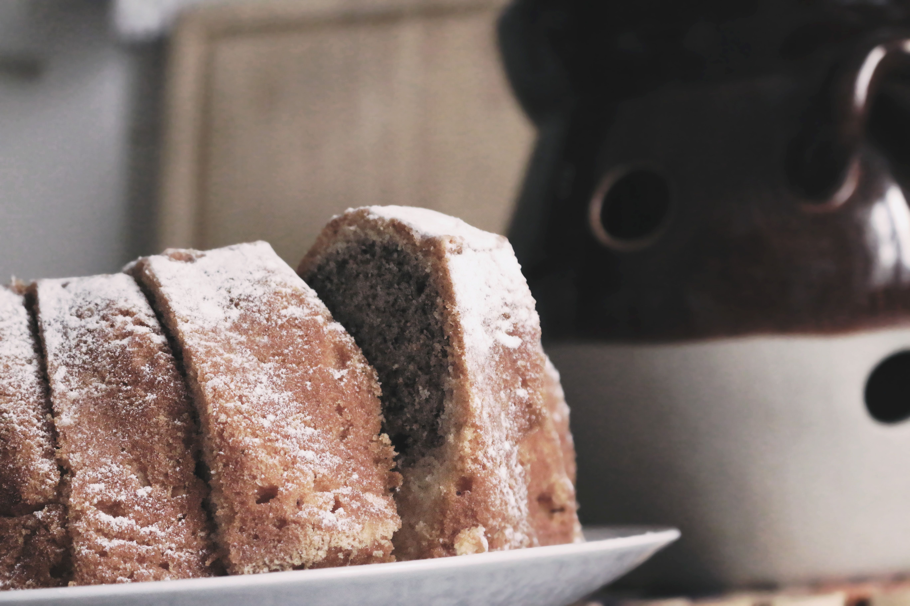

你不知道的德国 · 24
🥨 德国面包文化
300+种面包UNESCO世界遗产、Brötchen方言地图、Abendbrot冷晚餐——德国人是面包做的
300+种面包：UNESCO世界文化遗产
德国面包文化在2014年被联合国教科文组织列入人类非物质文化遗产。德国注册在案的面包种类超过300种，从黑麦面包（Roggenbrot）到混合面包（Mischbrot），从葵花籽面包（Sonnenblumenkernbrot）到土豆面包（Kartoffelbrot），每个地区都有自己的特色。
德国人对面包的严肃态度体现在"Deutsches Brotinstitut"（德国面包研究所）的存在——这个机构专门制定面包质量标准、认证传统面包店、推广面包文化。德国人年均消费面包约85公斤，位居欧洲前列。早餐、Abendbrot、甚至午餐的三明治，面包无处不在。
🇩🇪 Deutsche Originalfassung / 德语原文
Die deutsche Brotkultur wurde 2014 von der UNESCO als immaterielles Kulturerbe anerkannt. Über 300 Brotsorten sind offiziell registriert — vom Roggenbrot bis zum Mischbrot, vom Sonnenblumenkernbrot bis zum Kartoffelbrot. Das Deutsche Brotinstitut setzt Qualitätsstandards und zertifiziert traditionelle Bäckereien. Jeder Deutsche isst im Durchschnitt etwa 85 Kilogramm Brot pro Jahr.
Bäckerei：德国面包店的一天
德国的传统面包店（Bäckerei）的一天从凌晨3点开始。面包师（Bäcker）凌晨到店，揉面、发酵、烘烤，确保早上6点开门时架子上摆满新鲜面包。周末早上，面包店门口排长队是德国小镇的常见景象——买新鲜Brötchen和Brezel是德国人的周末仪式。
但传统面包店正在被超市面包柜和连锁面包店挤压。像"Backwerk"、"Kamps"这样的连锁店用中央工厂+门店烘焙模式降低成本。不过德国还有大量Bio-Bäckerei（有机面包店），坚持用有机面粉和传统发酵工艺。
💡 德国有一个职业叫"Bäckermeister"（面包师傅），需要通过严格的Meisterprüfung（师傅考试）。考试内容包括烘焙技术、食品化学、甚至企业管理——通过率只有约60%。
Brötchen vs Semmel vs Schrippe：小面包的方言战争
一个小小的白面包在德国有几十种叫法！在北部和西部，它叫Brötchen（小面包）；在巴伐利亚和奥地利，它叫Semmel；在柏林和勃兰登堡，它叫Schrippe；在施瓦本地区叫Weckle；在法兰克福叫Rundstück。德国人自己经常因为这个词争论不休。
这种方言多样性反映了德国历史上长期分裂为数百个小邦国的现实。直到今天，你从一个城市坐火车到另一个城市，面包的叫法就可能不一样。这是德国语言多样性的一个可爱缩影。
Abendbrot：面包当晚饭的文化
德国人的晚餐叫Abendbrot——直译就是"晚上的面包"。典型的德国家庭晚餐不是热菜，而是面包+冷切肉（Aufschnitt）+奶酪+酸黄瓜+各种抹酱。一家人围坐在一起，各自在面包上堆自己喜欢的配料。
这种习惯源于工业化时代——工人们中午在工厂食堂吃热餐，晚上回家只需简单的冷食。至今，很多德国家庭仍然保持这个传统。如果你被德国朋友邀请参加"Abendbrot"，期待的不是大餐，而是温馨的面包社交。
🇩🇪 Deutsche Originalfassung / 德语原文
Das Abendbrot ist die traditionelle deutsche Abendmahlzeit — Brot mit Aufschnitt, Käse, Gewürzgurken und verschiedenen Brotaufstrichen. Diese Tradition stammt aus der Industrialisierung, als Arbeiter mittags in der Kantine warm aßen und abends nur eine einfache kalte Mahlzeit brauchten. Bis heute pflegen viele Familien dieses Ritual.
Vollkornbrot：德国的国民健康面包
Vollkornbrot（全麦面包）是德国面包的灵魂。它由整粒黑麦或小麦研磨的全麦面粉制成，深棕色、湿润、质地紧实，富含膳食纤维。一片Vollkornbrot配上黄油和奶酪，能让你饱腹一整个上午。
德国体育大学的一项研究发现，Vollkornbrot的升糖指数比白面包低40%以上，是运动员和健康饮食者的首选。德国面包里有"Vollkorn"标识的，法律规定必须至少含有90%的全麦面粉——不是随便说说。Pumpernickel（黑裸麦面包）是其中最有名的品种，由黑麦粗粉在低温下蒸烤16-24小时制成。
Brezel / Brez'n：椒盐卷饼
Brezel（在巴伐利亚叫Brez'n）是南德最标志性的面包。这个独特的打结形状据说源于中世纪，代表祈祷中交叉的双臂。Brezel的制作有一个特殊工艺：在烘烤前要用Natronlauge（食用碱水）浸泡，这赋予了它深棕色光亮的外皮和独特的碱味。
在慕尼黑的啤酒节，Brezel和啤酒是绝配。在斯图加特，Brezel配黄油（Butterbrezel）是早餐经典。别忘了还有变种：Käsebrezel（奶酪椒盐卷饼）、Mohnbrezel（罂粟籽卷饼）和Sesambrezel（芝麻卷饼）。不过小心——把Brezel叫做"椒盐卷饼"是对德国人的冒犯，它就是Brezel，独一无二。
📝 核心词汇表 / Wortschatz
本集文章里的关键德语词汇，配例句加深理解
das Brot, -e面包
📌 In Deutschland gibt es über 300 Brotsorten. — 德国有超过300种面包。
die Bäckerei, -en面包店
📌 Ich hole jeden Morgen frische Brötchen in der Bäckerei. — 我每天早上去面包店买新鲜小面包。
das Brötchen, -小面包
📌 Zum Frühstück esse ich zwei Brötchen mit Butter und Marmelade. — 早餐我吃两个小面包配黄油和果酱。
das Abendbrot晚餐（面包冷餐）
📌 Bei uns gibt es heute Abendbrot mit Käse und Wurst. — 今晚我们吃面包配奶酪和香肠。
das Vollkornbrot全麦面包
📌 Vollkornbrot ist gesünder als Weißbrot. — 全麦面包比白面包更健康。
die Brezel, -n椒盐卷饼
📌 In Bayern isst man die Brezel am liebsten mit Weißwurst. — 在巴伐利亚，Brezel最配白香肠。
der Aufschnitt冷切肉片
📌 Der Aufschnitt kommt auf das Brot. — 冷切肉片放在面包上。
der Bäcker, -面包师
📌 Der Bäcker steht jeden Morgen um drei Uhr auf. — 面包师每天早上三点起床。
das Roggenbrot黑麦面包
📌 Roggenbrot ist dunkel und sehr aromatisch. — 黑麦面包颜色深，香味浓郁。
Leons Deutschzentrum
📖 想读更多德国冷知识？
51 期「你不知道的德国」深度专栏，都在 Leon 德语学习中心。
📚 进入网站